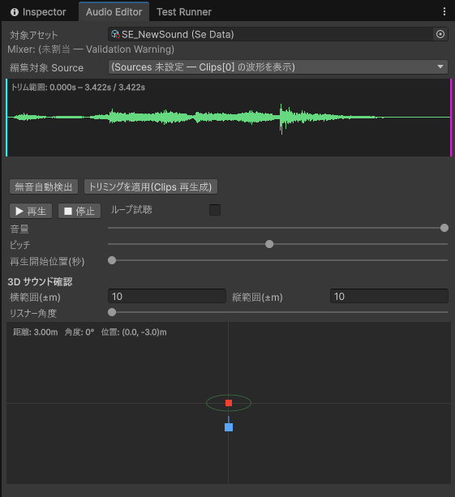
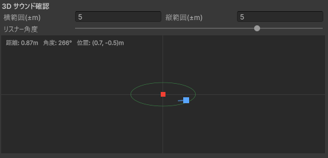

Audio Editor は、音の波形を見ながら細かい調整をするためのウィンドウです。できること:
次のどちらでも開けます:
Tools > D-Drive > Editors > Audio開いたら、一番上の「対象アセット」欄に編集したい SE / BGM を設定します（Asset Browser で選択してから開くと自動で入ります）。まだデータが無ければ、同じ行の「＋ 新規作成」ボタンで SE / BGM のどちらを作るか選んで、その場で新規作成できます。

「素材の前後に無音が入っていて鳴り出しが遅れる」というときに使います。元のファイルは一切変更されない（非破壊）ので、安心して何度でもやり直せます。
Sources に元の音声ファイルを設定（Asset Browser のドラッグ＆ドロップで登録した場合は自動で入っています）対象が BGM の場合、波形ドラッグは「ループ範囲」（曲のどこからどこまでを繰り返すか）の設定になります。操作は上のトリミングと同じで、水色=ループ開始、紫=ループ終了です。
| 操作 | 説明 |
|---|---|
| ▶ 再生 / ■ 停止 | ゲームを実行せずにその場で試聴。Clips が複数ある SE は、設定した Select Mode（ランダム等）どおりに毎回選ばれるので、▶ を連打するとランダム再生の確認ができます。 |
| ループ試聴 | 繰り返し再生で聞き続ける（データは変更されません）。 |
| 音量 / ピッチ | 再生中に動かすと、その場で音に反映されます。ここでの操作は試聴用で、データには保存されません。「この値が良い」と思ったら Inspector の Volume / Pitch Range に入力してください。 |
| 再生開始位置(秒) | こちらはデータに保存されます（SE の Start Offset Sec と同じもの）。次の再生から反映。 |
ウィンドウ下部の四角いエリアで、「音源から離れるとどう聞こえるか」を耳で確認できます。

| 要素 | 説明 |
|---|---|
| 赤い点（中央） | 音源の位置。固定です。 |
| 青い点 | 聞く人（リスナー）の位置。ドラッグで自由に動かせます。再生中に動かすと、音量や左右の聞こえ方がリアルタイムに変わります。 |
| 青い点から伸びる線 | 聞く人の向き。「リスナー角度」スライダーで回せます。向きを変えると左右の聞こえ方（どちらの耳から聞こえるか）が変わります。ヘッドホン推奨。 |
| 緑の円 | Min Distance。この内側では最大音量。 |
| オレンジの円 | Max Distance。この外側では聞こえません。 |
| 横範囲 / 縦範囲(±m) | 四角いエリアが表す実際の距離（メートル）。遠距離の減衰を見たいときは大きく、近距離を細かく見たいときは小さく。 |
| 距離表示（左上） | 音源から聞く人までの今の距離・角度・座標。 |